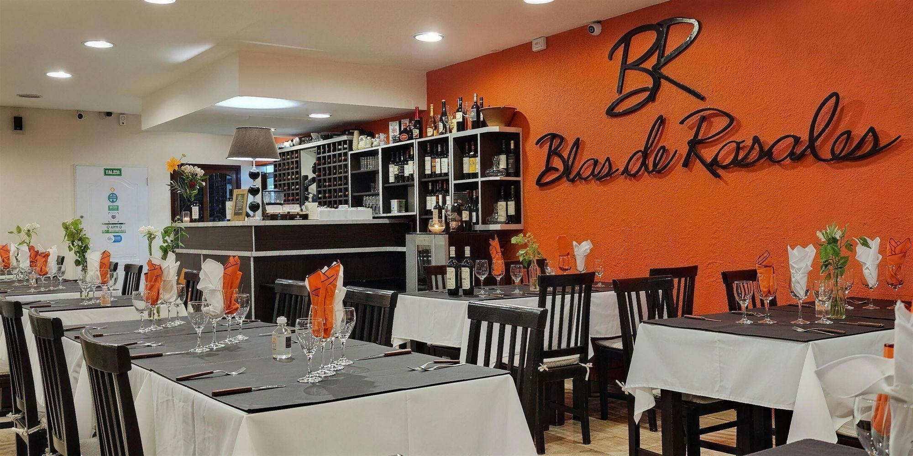
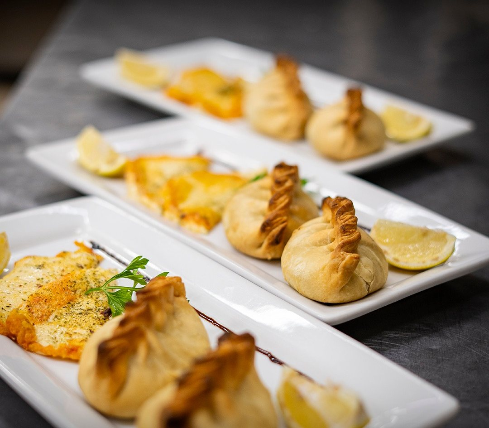
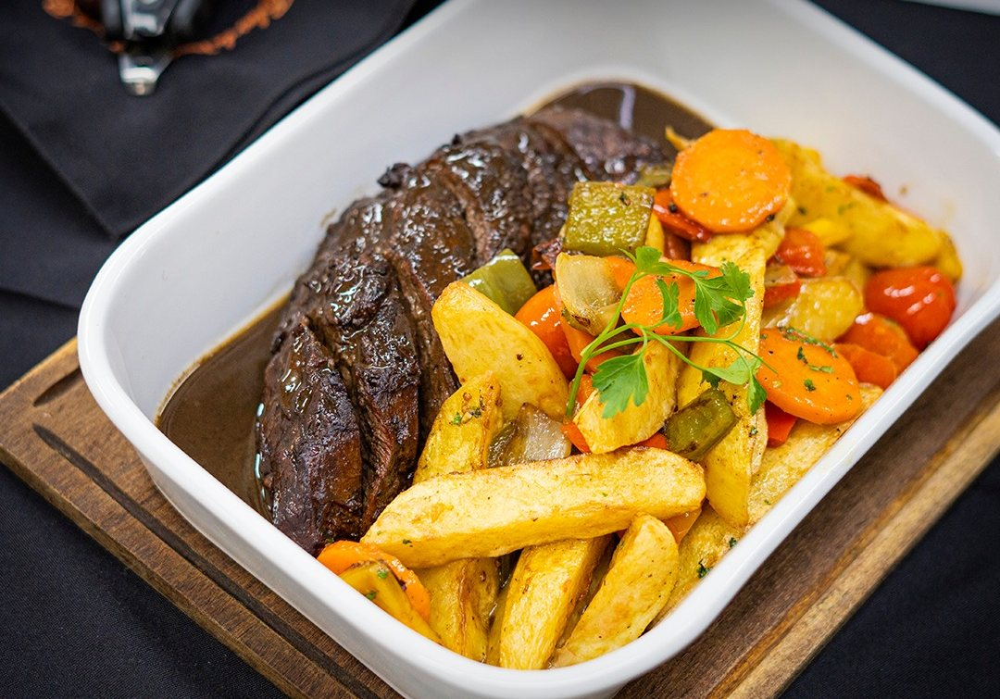
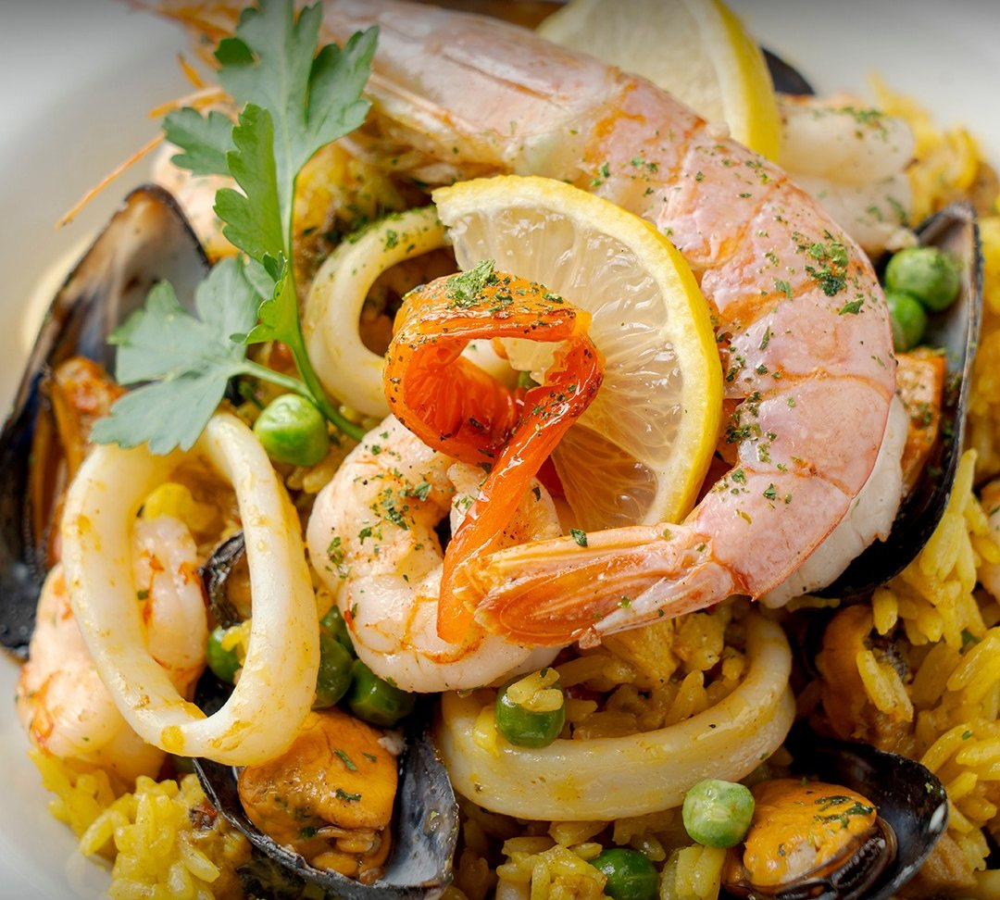
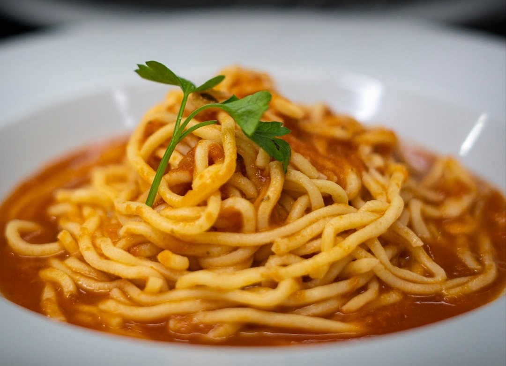
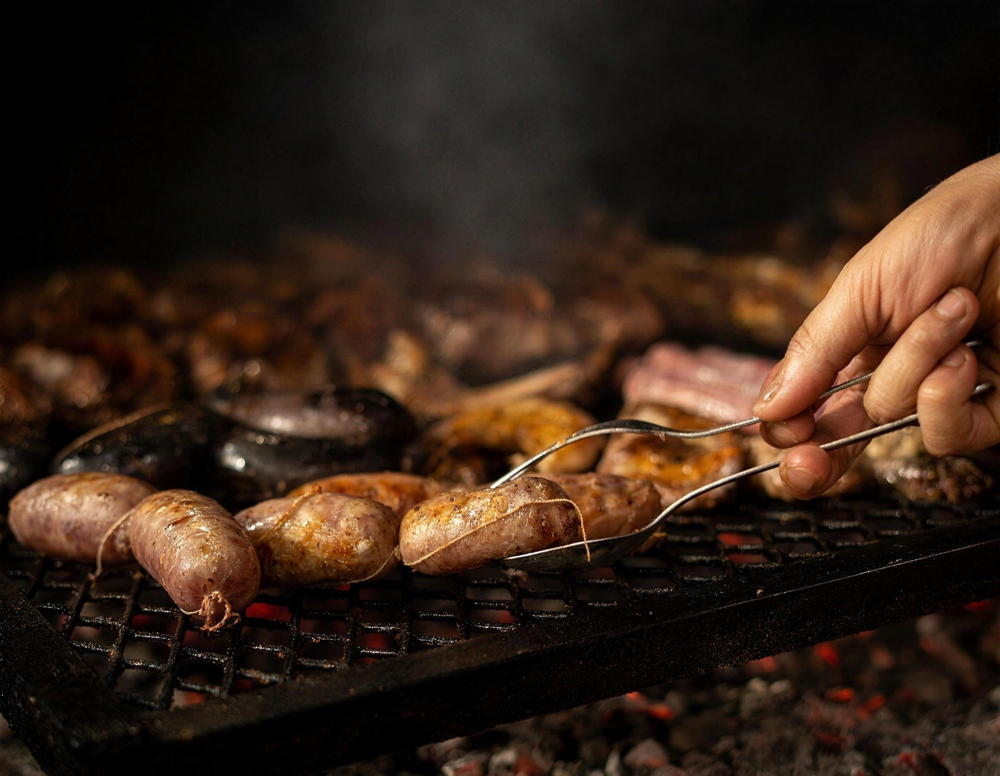
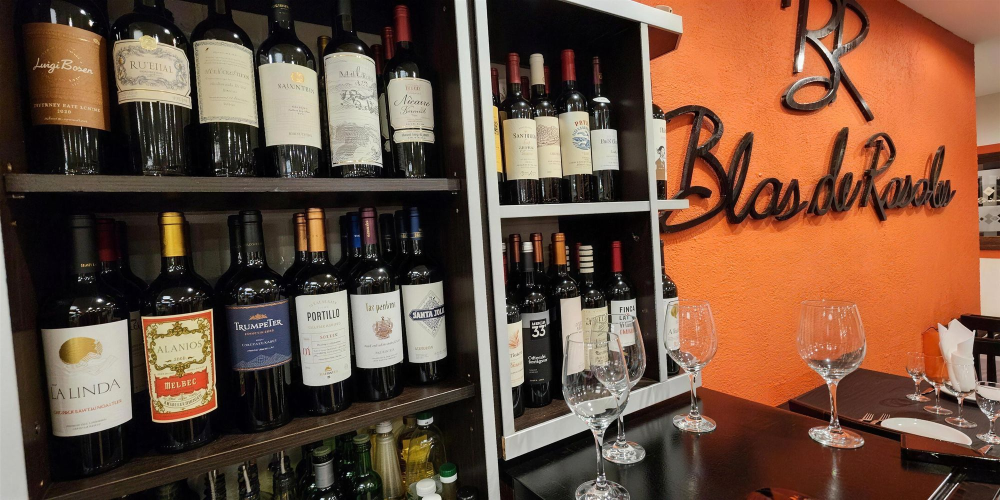

Inicio / La carta
La carta

Entradas
Calientes y frías
Bastoncitos de queso rebozados
Recomendado
Omelette
Solo queso · Jamón y queso · Champignones y queso
Empanadas criollas
Gambas al ajillo
Provoleta Blas de Rosales
Queso provolone, panceta y morrones
Flatbread
Pan chato saborizado, guarnecido con jamón crudo y vegetales · Recomendado
Jamón crudo, palmitos y salsa golf
Rabas
Con papas fritas
Langostinos apanados
Fish & Chips
Piezas de mar rebozadas con papas fritas · Recomendado
Tortilla para uno
Papas · Espinaca · Brócoli
Revuelto Gramajo
Ensaladas y guarniciones
Armala a tu gusto Elegí hasta 4 ingredientes
Tomate · Cebolla · Apio · Lechuga · Papa · Achicoria · Zanahoria · Rúcula · Remolacha
Adicionales con cargo: huevo duro, queso, atún, palmitos, tomates secos, champignon y palta.
Ensaladas especiales
Rúcula, parmesano y cherry
Cantábrica
Hojas verdes, tomates cherry, croutons, dados de queso y tiras de pollo · Recomendado
Tibia de vegetales
Grillados · Recomendado
Hojas verdes, apio roquefort y crutones
Salmón, hojas verdes, alcaparras y cherry
Sujeto a disponibilidad
Papas perejil y morrones asados
Crostinis
Tostaditas con ajo, lechuga, tomate y huevo duro
Ensalada del mar
Rúcula, palmitos, kanikama y tomate
Acompañamientos
Papas fritas
Bastón · Española · Rejillas
Papas fritas con huevos revueltos
Papas al natural
Papas a la crema
Papas especiales
Noisette · Bravas · Provenzal
Puré
Papas · Calabaza · Mixto
Puré rústico
Panceta y verdeo
Puré de manzanas
Timbal de arroz
Arroz, verdeo y crema
Espinacas a la crema
Calabacines grillados
Con manteca y azúcar negra
Tomate a la italiana
Grillados, gratinados con reggianito
Papas rellenas Ros
Con miel y ajo
Papas Blas
Rellenas con manteca, queso, panceta tostada y cebollines · Recomendado
Huevos fritos
Mézclum
De vegetales, naranja y miel

Alta cocina
Carnes, cerdo y pollo
Bife de chorizo al chimichurri
Con papas bastón · Recomendado
Colita de cuadril marinada
Acompañada con vegetales · Para 2 personas
Entrecôte a la francesa
Crema amostazada al Chardonnay y hongos en guarnición de papas gratinadas
Entrecôte bacon
Con papas gratinadas · Recomendado
Lomo a la pimienta
Con papas a la crema
Lomo al champignon
Con papas noisette
Lomo al roquefort
Con papas rústicas
Lomo en Malbec y frutos rojos
Recomendado
Lomo lardeado
Con papas a la criolla
Lomo Ros
Al provolone, con hojas verdes en guarnición de papas rellenas de ajo y miel · Recomendado
Lomo strogonoff
Con papas a la crema
Mollejitas
A la crema
Mollejitas al champagne
Con papas o arroz cremoso
Pollo al curry
Con arroz salteado · Recomendado
Pollo deshuesado a la naranja
Con papas al natural
Pollo deshuesado al ajillo
Con papas a la gallega
Pollo deshuesado al champignon
Con papas españolas
Pollo mediterráneo
Cherry, panceta, queso y champignones con papas gajo · Recomendado
Cerdo a la mostaza
Con papas noisette
Cerdo agridulce
Con mézclum de naranja a la miel
Cerdo laqueado
Con puré de manzanas
Costillitas de cerdo al whisky
Con timbal de arroz · Recomendado
Especialidades Sujeto a disponibilidad
Chivito braseado con papas rústicas
Paleta de chivito braseado, vegetales · Recomendado
Cordero al Oporto
Con higos y papas en gajo · Recomendado

Pescados y mariscos
Cazuela de mariscos
Filet de merluza a las finas hierbas
Merluza a la romana
Con puré
Merluza a las finas hierbas
Con papas noisette
Papillot de merluza
Cocción en paquete con roquefort y vegetales
Papillot de surubí
Cocción en paquete con roquefort y vegetales
Ranas a la provenzal
Con papas fritas
Roulade de merluza y espinaca
Con vegetales · Recomendado
Salmón rosado Blas
Grillado en guarnición de arroz salteado con verduras al wok · Recomendado
Salmón rosado grillado
Con papas gratinadass
Sopa de pescado
Pescado, fumet y vegetales · Recomendado
Trucha a la pimienta
Con papas gratinadass
Todos los lomos pueden cambiarse a entrecôte. Todas las carnes, pollos y pescados pueden ser simplemente grillados o a la leña.

Pastas y risottos
Artesanales, de nuestros chefs
Pastas
Crepes de mariscos
En salsa rosa · Recomendado
Crepes de pollo
Champignon y verdeo
Ñoquis de papa
Panzotis
Rellenos de espinaca y seso
Sorrentinos
De espinacas y 4 quesos
Sorrentinos
De calabaza y queso · Recomendado
Sorrentinos
De jamón y queso
Sorrentinos
De salmón
Sorrentinos
De ricotta y nuez
Tallarines
Al huevo
Tallarines de remolacha
Salsa recomendada: crema, jamón crudo y verdeo · Recomendado
Tallarines Di Mare
Frutos del mar a la crema o salsa de tomate
Salsas
Blas
Panceta, ciboulette, crema y almendras
Boloñesa
Roquefort, 4 quesos, pesto y crema de verdeo
Crema, rúcula y cherry
Brócoli
Crema y ajo
Reducción de Malbec
Con hongos
Scarparo
Jamón, fondue de tomate, panceta, crema, verdeo y albahaca
Carbonara
Ragout
Carne vacuna
Champignon
Di Mare
Frutos del mar a la crema o salsa de tomate · Recomendado
Risottos
Risotto con camarones
Arroz, vegetales, camarones y crema
Risotto de hongos
Risotto de vegetales
Risotto "Tony"
Arroz, camarones, hongos y crema · Recomendado
Minutas
Con papas fritas o ensalada mixta
Milanesa de ternera
Milanesa napolitana
Milanesa al roquefort
Milanesa al provolone
Suprema de pollo
Suprema napolitana
Suprema al roquefort
Suprema al provolone
Milanesa de merluza
Milanesa de surubí

A la leña
Carnes asadas a la leña
Cabrito serrano
Con empanada y papas fritas o ensalada mixta
Entraña
Bifecito de lomo
Plancha o leña
Entrecôte
Plancha o leña
Bife de chorizo
Plancha o leña
Tira de asado
Vacío
Costillas de cerdo
Matambre de cerdo
Al limón · Al roquefort
Churrasquito de cerdo
Plancha o leña
Achuras
Tabla de achuras
Chorizo, morcilla, salchicha, chinchulín y mollejas
Molleja
Chinchulín
Salchicha parrillera
Chorizo o morcilla
Parrillada completa
Parrillada Blas de Rosales
Empanada criolla, provoleta, chorizo, morcilla, salchicha, chinchulín, molleja, costilla de cerdo, costilla, vacío, chivito; papas fritas con huevo revuelto y ensalada mixta · Para 2 personas
Parrillada clásica para dos
Chorizo, morcilla, chinchulín, costilla, vacío, costilla de cerdo
Parrillada clásica para uno
Chorizo, morcilla, chinchulín, costilla, vacío, costilla de cerdo
Parrillada de vegetales
Postres y café
Postres
Panqueque
Crema chantilly, dulce de leche y nueces
Panqueque
Helado, frutos rojos y crema chantilly
Panqueque
Helado, dulce de leche y salsa de chocolate
Panqueque
Dulce de leche con baño de chocolate
Panqueque
Dulce de leche y crema
Tiramisú
Crème brûlée
Brownie con helado
Frutas en almíbar
Con crema o queso Tybo o cremoso
Crepe
De dulce de leche flambeado
Batata o membrillo
Con queso Tybo o fresco
Copa tentación
Helado de vainilla, Irish Cream, Marroc y crema chantilly · Recomendado
Copa Blas de Rosales
Helado, Irish Cream, almendras y crema chantilly · Recomendado
Helado
1 bocha · 2 bochas · 3 bochas
Tortilla de manzana
Panqueque con manzana flambeada al rhum
Flan casero
Con caramelo, crema y dulce de leche
Don Pedro
Helado, whisky, nueces y crema chantilly
Copa chocolate
Helado de chocolate, licor de chocolate y chantilly
Copa Figs & Cream
Crema americana, higos, crema chantilly, chocolate y nueces
Lemon Ice
Helado de limón con champagne
Bombón escocés, suizo o almendrado
Copa de Nutella y Oreo
Mixtura de frutas
Sola o con helado
Cafetería Adicional crema
Café o cortado pocillo
Café o cortado jarrito
Té clásico, hierbas y saborizados
Tés Inti Zen
Café Blas de Rosales
Leche condensada, café, coñac, canela, chocolate
Cappuccino | Irlandés | Caribeño | Francés

Vinos
Alta gama, de autor y recomendados
Finca La Linda
Malbec · Cabernet Sauvignon
Finca Las Perdices
Malbec · Cabernet Sauvignon · Malbec por copa
El Potrillo Salentein
Malbec · Pinot Noir · Dulce Natural
Killka Salentein
Red Blend
Callia Salentein
Malbec · Chardonnay
Salentein Reserve Salentein
Malbec · Cabernet Sauvignon
Saint Felicien Catena Zapata
Malbec · Cabernet Franc
D.V. Catena Catena Zapata
Malbec-Malbec · Cabernet-Malbec
Nicasia Vineyards Catena Zapata
Red Blend Malbec · Red Blend Cabernet Franc
Alamos Catena Zapata
Malbec · Cabernet Sauvignon · Pinot Noir · Espumante Extra Brut / Brut Rosé
Elementos El Esteco
Malbec · Tannat · Elementos 3/8
Don David El Esteco
Malbec
Luigi Bosca
Malbec · Espumante Brut Nature
Rutini Rutini
Malbec-Malbec · Cabernet-Malbec
Trumpeter Rutini
Malbec
Reto Vicentin Family Wines
Malbec orgánico y blend
Bodegas clásicas
Norton
Malbec · Cabernet Sauvignon · Chardonnay · Sauvignon Blanc
Varietales especiales Norton
Mil Rosas · Cosecha Tardía (blanco o tinto)
San Felipe La Rural
Caramañola Blanco · San Felipe Caramañola Blanco 3/8 · Caramañola Tinto · San Felipe Caramañola Tinto 3/8
Etchart Privado Etchart
Torrontés
Cafayate Etchart
Malbec · Cabernet Sauvignon
Alaris Trapiche
Malbec · Cabernet Sauvignon · Sauvignon Blanc
Chandon
Castel Chandon Blanco · Valmont Tinto
Latitud 33° Chandon
Malbec · Cabernet Sauvignon · Sauvignon Blanc
Alma Mora Finca Las Moras
Malbec · Cabernet Sauvignon · Chardonnay
DADA Finca Las Moras
Varietales
Nieto Senetiner Nieto Senetiner
Malbec · Cabernet Sauvignon
Benjamín Nieto Senetiner Nieto Senetiner
Malbec · Cabernet Sauvignon · Chardonnay
Santa Julia
Malbec · Cabernet Sauvignon · Syrah · Tempranillo · Chardonnay · Sauvignon Blanc
Especiales Santa Julia
Chenin Dulce Natural · Dulce Tinto
Uxmal Catena Zapata
Red Blend Malbec · Sauvignon Blanc-Sémillon
“El vino es el abrazo de las palabras, en su justa medida…”
Otras bebidas
Bebidas sin alcohol
Agua mineral con o sin gas 500 cc
Gaseosas 330 cc (línea Coca-Cola)
Gaseosas lata 350 cc (línea Coca-Cola)
Saborizadas 500 cc (línea Coca-Cola)
Jugo de naranja
Jarra de limonada
Cervezas
Stella Artois 330 cc (rubia o negra)
Stella Artois 1000 cc
Andes 473 cc
Andes 1000 cc
Corona 750 cc
Corona 330 cc
Tragos
Gancia con limón
Gin tonic
Campari con naranja
Fernet con coca
Espirituosas
Baileys
Tía María
Reserva San Juan
Cointreau
Beefeater
Absolut
Havana Club
Whiskies importados
Espumantes
Luigi Bosca
Alamos
Salentein
Chandon
Baron B
Chandon 187
Las Perdices
Uxmal